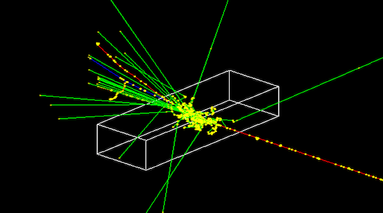

300x60x100 cm, with CsI as material.second arm.
It should be placed at the very back of this mother volume.
CsI, use the
material scintillator. |
 |
ConstructMaterials method, it has
a long name becasue it is a particular type of plastic. You need just to retrieve it
by name when using it in the G4LogicalVolume.